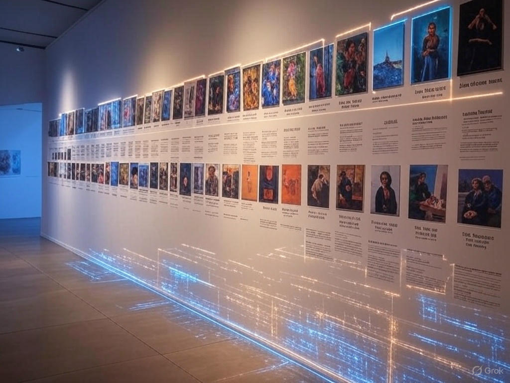

A Journey Through Time
Digital art has transformed the creative landscape, evolving from rudimentary pixel drawings to sophisticated masterpieces that rival traditional media. Let’s explore this journey and see how tools like the Brush Stroke Patterns Drawing Tool fit into this vibrant history.
The story begins in the 1960s with early computer art, where artists like John Whitney used machines to create abstract animations. These pioneers laid the groundwork, proving that technology could be an artistic medium. Fast forward to the 1980s, and the rise of personal computers brought tools like Microsoft Paint—simple, yet revolutionary for its time.
The 1990s saw a leap forward with software like Adobe Photoshop and Illustrator, giving artists unprecedented control over color, texture, and form. Digital tablets emerged, bridging the gap between hand-drawn and digital techniques. By the 2000s, the internet democratized art, with platforms like DeviantArt showcasing millions of creators.
Today, digital art is everywhere—from NFT marketplaces to AI-generated works. Tools like Drawmatinc’s Brush Stroke Patterns Drawing Tool embody this evolution, offering intuitive features like symmetry and custom brushes that empower anyone to create intricate designs right in their browser.
What’s next? As technology advances, we might see more immersive tools—think VR sketching or real-time collaborative canvases. At Drawmatinc, I’m excited to be part of this ongoing story, building tools that inspire the next generation of artists.
 Latest Tool Updates: Spiral Mode
Latest Tool Updates: Spiral Mode
 Finding Inspiration in Patterns
Finding Inspiration in Patterns